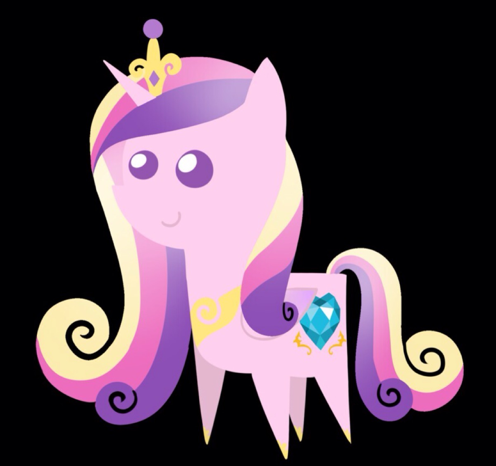
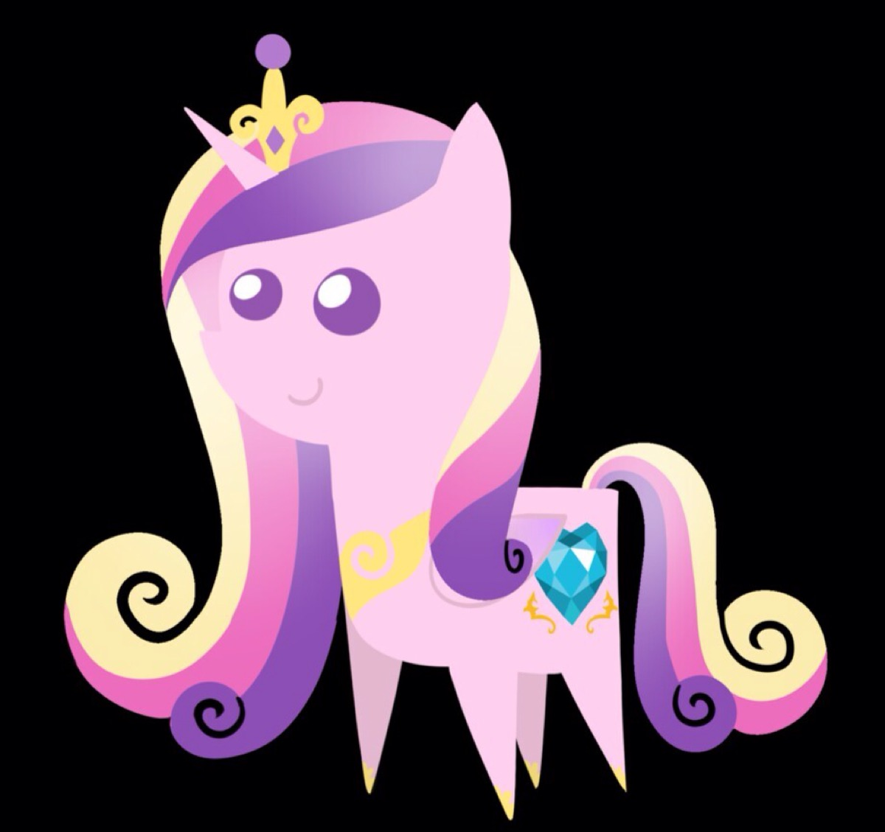

✨ 角色故事 ✨
音韵公主在小马国历史中有着举足轻重的地位。她自幼便展现出对爱与情感魔法的天赋。在成长的过程中，她不断学习和磨练自己的能力，立志成为守护小马国和平与爱的使者。
她与闪耀盔甲的爱情是小马国的一段佳话。他们的婚礼曾遭受黑晶王的破坏，黑晶王妄图用黑暗魔法统治水晶帝国。面对强大的敌人，音韵公主毫不退缩，她凝聚起水晶帝国臣民们心中的爱与希望，借助爱的魔法成功击败黑晶王，让水晶帝国重新沐浴在爱的光辉之下。
此后，音韵公主一直肩负着守护水晶帝国的重任，她用爱与智慧化解了诸多危机，成为小马国人民心中温柔且强大的守护者。无论是面对内部的矛盾还是外部的威胁，她总能以爱为指引，找到解决问题的方法，让小马国的友谊与和谐得以延续。
 
